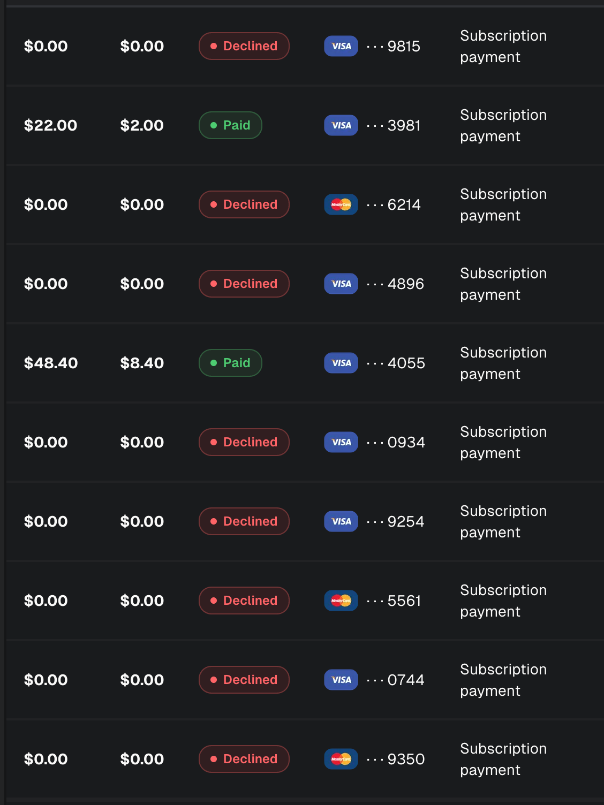
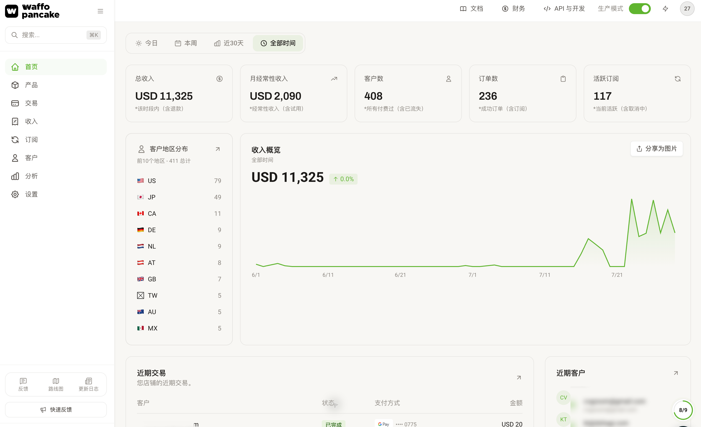
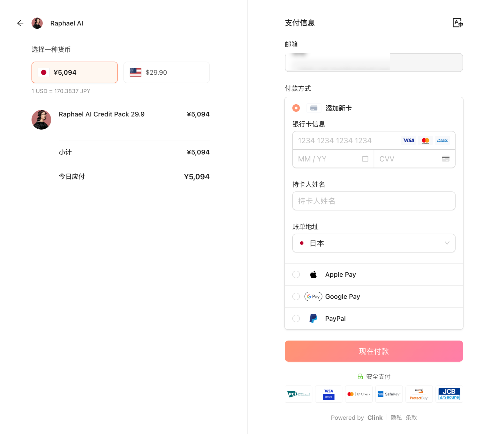

哈喽，大家好，我是刘小排。
关于AI产品的订阅类收单收款，圈内的好友都知道，我曾经是Creem的头号粉丝。
有朋友说「Creem是刘小排推起来的」，不谦虚地说，我认为这个说法问题不大。
- 我自从2024年10月就开始用Creem了，当时Creem这家公司才刚刚成立一个月，我就跳进去吃螃蟹。
- 两年内不断推荐Creem给我身边的小伙伴，包括生财有术社群和好兄弟哥飞的社群，好多朋友都是因为看到我的直接或者间接推荐，才使用了Creem。记得2024年底，已经有好多朋友受够了Stripe，我专程去深圳找了哥飞，给哥飞的朋友们按头推荐Creem。
- 在过去两年时间里的很多时候，Creem的收单排行，前10里有2个是我的产品。
但是最近，严格地说，是在2026年5月以后，Creem变了，忘记了初心。我猜测是Creem在2026年5月替换掉了底层的Stripe、自己做风控、而它自身风控能力又不足导致的问题。
自从2026年7月中旬开始，情况更加严重。Creem上的所有AI产品，支付成功率暴跌 / 付款被风控拦截（decline）。下面是我的真实截图。我的用户想要付款——包括两年前就已经订阅我产品的老用户的续费——都有超过一半的付款失败。

可能你想问，是不是违规了？ 不是。
违规的账号，会被直接封号，一个都收款不成功。 不是产品的问题，是Creem自己的问题。
我发邮件问过Creem，官方回复说是对于AI产品（尤其是AIGC）整个品类调整了风控策略。
- 如果你的产品违规，那就立即封号，冻结资金90天；
- 如果你的产品不违规，不封号，但——收款成功率被压到奇低，就像我截图这样。
哥飞前几天拉了一个Creem问题沟通群，很快就进了200多人。
说实话，看到这样的截图，我是非常心痛的。收入掉了一半不止。因为对我这样正规以订阅为核心收费方式的老产品来说，主要收入是靠续费。连续费都续不进来，就约等于要重头创业了。
这段时间，我和身边的很多好朋友，都在疯狂测试其他的AI收款平台（正式说法叫：MoR）。
已知对AIGC产品不太友好的有：
- Stripe - 当然可用，但是如果你不认识专属客户经理的话（门槛是 $10M ARR），比较容易封号或者直接罚款。Stripe封号你们肯定都见过，直接罚款25000美元和5万美元，我最近也见过不少。
- Paddle - 不可用，不会通过AIGC产品审核
- PayerMax - 可用，但已经紧急调整了策略，对AIGC产品，需要保证金
- Dodo Payments - 可用，但是容易不跟你打招呼就直接封号
- Lemon Squeeze - 不推荐，已被 Stripe 收购，风控同源，约等于Stripe
- ……
我认为，一个好用的、适合AI产品使用的MoR收款平台至少要满足：
- 客服响应及时 。（Creem不满足）
- 不会毫无征兆地封号 ，有问题可以有客服经理先沟通，最好是通过微信IM及时沟通。 （除非你体量非常大，否则大部分平台都不满足）
- 费率低 。 其实很多MoR可以做到比Stripe费率更低，这是我不喜欢用Stripe的另一个原因。
- 收款方式多 。除了信用卡支付，最好还能支持Google Play、Apple Pay、PayPal、支付宝、微信支付等等，越多越好。
- 不会跑路 。 优先选择有大型VC或者大厂支持的。
测试了两周，我现在推荐以下两个支付网关，它们都完全满足条件。
严格来说，它们不应该叫“支付网关”，而是MoR，也就是 Merchant of Record。你可以把它理解成：平台会作为法律意义上的销售方，替你向全球用户收钱，处理订阅、销售税、发票、退款和拒付，然后再把收入结算给你。
这两个MoR平台都能解决全球收款问题，支持订阅支付，支持多种付款方式。它俩稍微侧重：
- Waffo Pancake 更适合独立开发者和刚起步的小产品， 不需要公司主体。
- Clink 则 更适合已经公司化运营、 需要复杂订阅系统或者正在做 AI Agent 的团队。
作为一个有点虚名的中登，我还厚着脸皮找这两个平台的创始人团队要了点小福利，下面有详情。
数量有限，先到先得。
Waffo Pancake
优点
- 适合独立开发者，你不需要有公司实体， 无论是国内公司还是海外公司，都不需要。
- 支持微信支付
- 发版周期极快，有什么反馈可以随时提出。
- 真人微信服务，实时响应
- 有大机构背书，跑路风险低 ，汇丰银行、高榕创投、BAI Capital等投资。对了，说到汇丰银行， 如果你有香港公司，在一定条件下，Waffo还可以协助你开通香港汇丰对公账户。这是一个非常独特的存在。
- 费率低。
注意
- AIGC类涉及真人deepfake类、侵权类、NSFW类无法接入。请先完成自查，别跟平台添麻烦。
通过我的邀请链接注册可获得：
https://waffo.ai?ref=RAPH01
- 1000 USD交易免手续费(26年底有效)
- 审核绿色通道 (1个工作日内完成初审或反馈)
- 社群客服 (有问题可以随时在微信社群内提问 会有专人解答)
截图是我的某个产品，正式使用了7天的情况。（曲线最开始有个小小的破，当时还没正式用。)

Clinkbill
Clink 更适合已经进入公司化运营的团队，它的客户包括英雄游戏、紫鸟、海艺(SeaArt) 等。
优点
- 除了信用卡、Apple Play、Google Play以外，还支持PayPal收款。欧洲用户PayPal的使用比例还蛮高的，类似于国内的支付宝。
- 收银台页面布局非常合理（见下图）。具体好在哪儿？懂的都懂，都在细节里。
- 真人服务 ，通过我的邀请码可以真人拉微信群1:1服务。
- 有大机构背书，跑路风险低 ，Baidu Ventures、Celtic投资。
- 费率低。

注意
- 需要有公司主体 。
- 邀请制 ，你需要弄到一个邀请码。
- AIGC类涉及真人deepfake类、侵权类、NSFW类无法接入。请先完成自查，别跟平台添麻烦。
账户注册地址：
https://uat-dashboard.clinkbill.com/
专属邀请码：
xiaopai通过我的邀请码注册可获得：
- 优先审核
- 1:1 服务，一般会拉个微信群 ，有问题可以立即处理
- $1000 交易免佣
最后，说几句心里话。
这次 Creem 的事，给我最大的教训不是「哪个平台不行了」，而是： 收款通道是出海产品的命脉，而命脉不能只有一条。
两年前，Creem 是所有人眼里的答案；两年后，它一夜变脸。
今天我推荐的任何平台，理论上也没有「永远」。
最终建议就三句话：
- 个人开发者、没有公司主体 → Waffo Pancake，用我的邀请链接注册，有 $1000 交易免手续费；
- 公司化运营、订阅体系复杂、在做 AI Agent → Clink，邀请码 xiaopai；
- 有条件就两条都接上，互为备份。我都上了。别让「平台风控一调、收入掉一半」这种事，在你身上发生第二次。
再次强调：
- 福利是我厚着脸皮找两家创始人团队要来的，先到先得，现在有效，不承诺永久有效；
- 接入前请务必自查合规——真人 deepfake、侵权、NSFW 别碰，别给平台添麻烦，更别给自己埋雷。
至于 Creem，我依然感谢它陪我走过的两年，目前我产品里也保留了Creem的支付，分发的流量比较少。
哪天它把风控调回正常水平，我也会第一时间告诉大家。
如果这篇文章帮到了你，转给那个还在被支付失败折磨的朋友吧。
如有问题，评论区见。